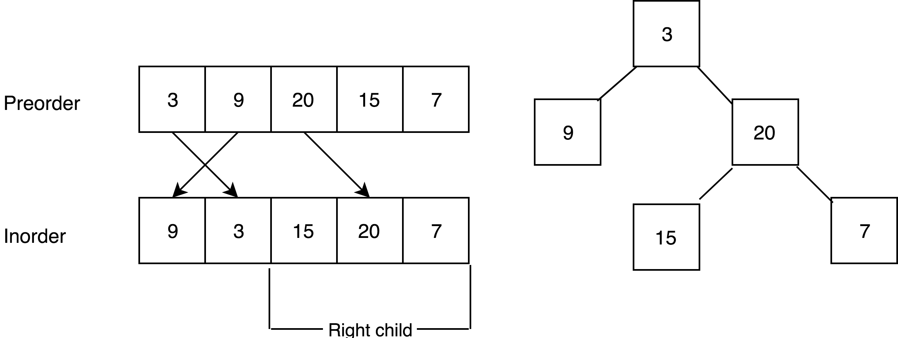

Construct Binary Tree from Preorder / Postorder and Inorder Traversal
Link: Construct Binary Tree from Preorder and Inorder Traversal / Construct Binary Tree from Inorder and Postorder Traversal
Problem description
Construct Binary Tree from Preorder and Inorder Traversal
Given preorder and inorder traversal of a tree, construct the binary tree.
Note: You may assume that duplicates do not exist in the tree.
For example, given
preorder = [3,9,20,15,7]
inorder = [9,3,15,20,7]
Return the following binary tree:
3
/ \
9 20
/ \
15 7
Construct Binary Tree from Inorder and Postorder Traversal
Given inorder and postorder traversal of a tree, construct the binary tree.
Note: You may assume that duplicates do not exist in the tree.
For example, given
inorder = [9,3,15,20,7]
postorder = [9,15,7,20,3]
Return the following binary tree:
3
/ \
9 20
/ \
15 7
Method
Construct Binary Tree from Preorder and Inorder Traversal
The idea is to find root of each tree during the traversal process.
Since array does not contain duplicated value, root node can be found in inorder[]. The left
part of array in inorder[] is the left child of root, right part is right child. Then
preorder[1] is the left child's root, preorder[2] is the right child's
root. Repeat this process and finally this tree can be rebuilt.

After current left child and right child is found, keep this process respectively to left child and right
child. The way to find root of it is to iterate the preorder[].
To reduce time consumption, during the first iteration, put all inorder[i] - I pair into
hash map as an index.
Construct Binary Tree from Inorder and Postorder Traversal
Almost same idea. The key is that in post-order traversal, last element in initially given array is the root of whole tree.
After found the root index in in-order array, the size of left child and right child can be found. And then the position of left child in post-order array is fixed. The left child’s root is the last element in segment of left child.
Code
Construct Binary Tree from Preorder and Inorder Traversal
/**
* preorder[0] is the root node.
* Since array does not contain duplicated value, root node can be found in inorder[].
* The left part of array in inorder[] is the left child of root, right part is right child.
* Then preorder[1] is the left child's root, preorder[2] is the right child's root.
* Repeat this process and finally this tree can be rebuilt.
*
* @param preorder pre order traversal array
* @param inorder in order traversal array
* @return constructed tree
*/
public TreeNode buildTree(int[] preorder, int[] inorder) {
/* Corner case */
if (preorder.length == 0) {
return null;
}
if (preorder.length == 1) {
return new TreeNode(preorder[0]);
}
/* Use a hash map to store node value and node index for quicker searching */
HashMap<Integer, Integer> m = new HashMap<>();
for (int i = 0; i < inorder.length; i++) {
m.put(inorder[i], i);
}
return traverse(preorder, 0, preorder.length - 1, 0, inorder.length - 1, m);
}
/**
* Find root of children in inorder array and in this way to find their left and right children.
*
* @param preorder pre order traversal array
* @param preStart root in preorder traverse array
* @param preEnd end of tree in preorder array
* @param inStart start of left children
* @param inEnd end of right children
* @param m hash map for quickly find root index in inorder array
* @return root node of current tree
*/
private TreeNode traverse(int[] preorder, int preStart, int preEnd, int inStart, int inEnd, HashMap<Integer, Integer> m) {
if (preStart > preEnd || inStart > inEnd) {
return null; // end point
}
TreeNode root = new TreeNode(preorder[preStart]); // first element in preorder array is root of current tree
int inRoot = m.get(preorder[preStart]); // find index of root in inorder array
int leftChild = inRoot - inStart; // left part of root in inorder array is left child of current root node
root.left = traverse(preorder, preStart + 1, preStart + leftChild, inStart, inRoot - 1, m);
root.right = traverse(preorder, preStart + leftChild + 1, preEnd, inRoot + 1, inEnd, m);
return root;
}
Construct Binary Tree from Inorder and Postorder Traversal
/**
* The last element of postorder is always the root of tree.
*
* @param inorder inorder array
* @param postorder postorder array
* @return rebuild binary tree
*/
public TreeNode buildTree(int[] inorder, int[] postorder) {
/* Corner case */
if (postorder.length == 0) {
return null;
}
if (postorder.length == 1) {
return new TreeNode(postorder[0]);
}
HashMap<Integer, Integer> m = new HashMap<>();
for (int i = 0; i < inorder.length; i++) {
m.put(inorder[i], i);
}
return rebuild(postorder, postorder.length - 1, 0, 0, inorder.length - 1, m);
}
/**
* Find the root in postorder and then use the inorder array to find child's length and continue.
* For better understanding, pStart is the last element in postorder, therefore pStart > pEnd.
*
* @param postorder postorder array
* @param pStart postorder start position in current recursion (pStart > pEnd)
* @param pEnd postorder end position in current recursion (pStart > pEnd)
* @param inStart inorder start position in current recursion
* @param inEnd inorder end position in current recursion
* @param m hash map
* @return root node of current tree
*/
private TreeNode rebuild(int[] postorder, int pStart, int pEnd, int inStart, int inEnd, HashMap<Integer, Integer> m) {
/* End point */
if (inStart > inEnd || pEnd > pStart) {
return null;
}
TreeNode root = new TreeNode(postorder[pStart]);
int inRoot = m.get(postorder[pStart]);
int leftChild = inRoot - inStart;
root.right = rebuild(postorder, pStart - 1, pEnd + inRoot - inStart, inRoot + 1, inEnd, m);
root.left = rebuild(postorder, pEnd + leftChild - 1, pEnd, inStart, inRoot - 1, m);
return root;
}